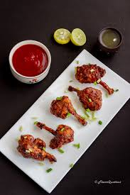

Chicken Lollipop Recipe

Ingredients:
- 10-12 chicken lollipops
- 1/2 cup all-purpose flour
- 2 eggs, beaten
- 1 cup breadcrumbs
- 1/2 teaspoon salt
- 1/4 teaspoon black pepper
- 1/2 teaspoon paprika
- Vegetable oil for frying
- Lemon wedges for serving
Instructions:
- Begin by preparing the chicken lollipops. Pat them dry with paper towels.
- Season the chicken lollipops with salt, black pepper, and paprika.
- Set up a breading station with three shallow bowls. One with flour, one with beaten eggs, and one with breadcrumbs.
- Dip each chicken lollipop into the flour, making sure it's coated evenly. Shake off any excess flour.
- Next, dip the lollipop into the beaten eggs, allowing any excess to drip off.
- Finally, coat the lollipop with breadcrumbs, pressing the breadcrumbs onto the chicken to adhere. Repeat for all lollipops.
- In a deep fryer or a large pot, heat vegetable oil to 350°F (175°C). Carefully add the breaded chicken lollipops and fry for about 6-8 minutes, or until they are golden brown and fully cooked inside.
- Remove the chicken lollipops from the oil and place them on a paper towel-lined plate to remove excess oil.
- Serve hot with lemon wedges and your favorite dipping sauce.